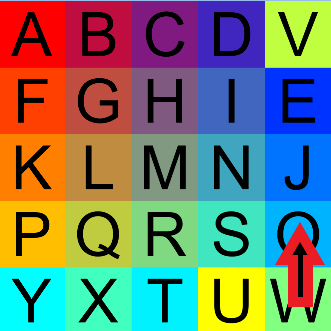

On the Subject of Looping Over
o follow the module’s gimmick? Did you expect this flavor text t
To solve this module, use the arrow buttons to shift the rows and columns to arrange the 25 tiles into alphabetical order.
This version of the manual provides a method/algorithm for solving Loopover.
- Move letters A to E by moving it horizontally to its corresponding column, then move it to the first row vertically.
- If there are any letters from A to E in the first row, move it 1 tile downwards first.
-
Rearrange the letters F to S by the following steps:
- If the letter that should be directly above the letter you are working on in the same column, move the letter you are working on horizontally by 1 tile.
- Move the letter that should be directly above the letter you are working on to the row above the row that contains the letter you are working on.
- Next, move the letter you are working on horizontally to it’s designated column.
- Finally, move that column up back to it’s correct position.
-
Sort the letters in the bottom row:
- Sort the letters U to Y by any sorting method, using the block that should contain the letter T or E as the temporary tile holder.
- To use the temporary tile holder, move the last column up and down only to swap the letter in bottom right and the temporary tile holder. 
- Please note that under any circumstances, the letter T cannot be stored in the temporary tile holder, otherwise the letter Y and T will swap their position once you have sorted the letters U to X.